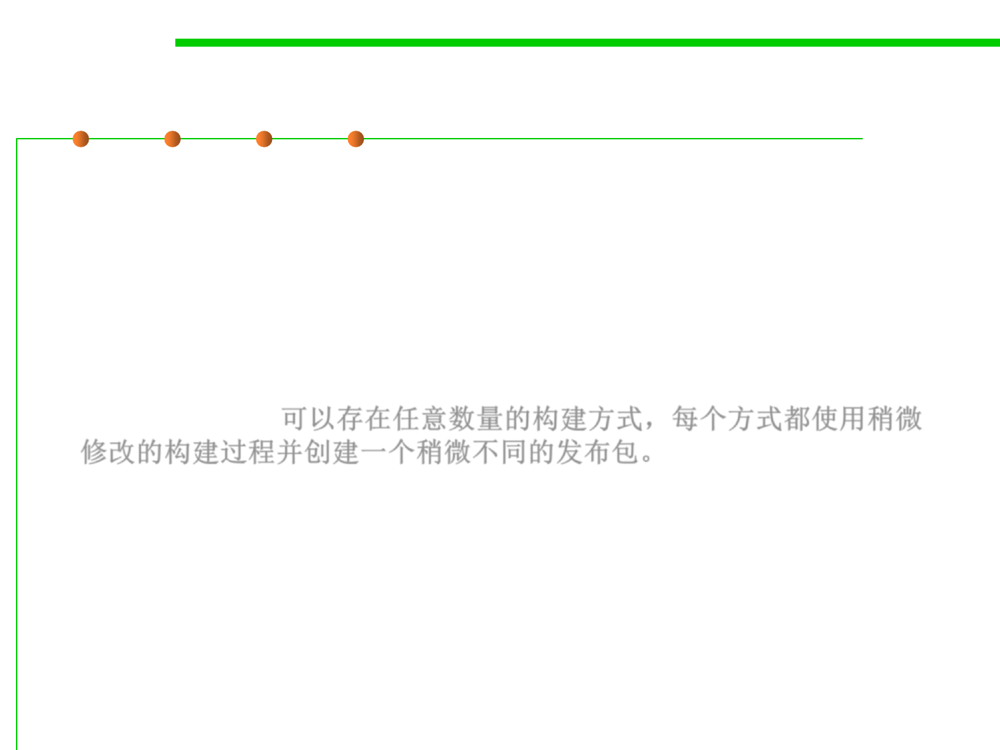

Ways of build
2.2 Process, Systems, and Tools of Software Construction
▪ Is there only one way each source file is compiled and linked into an
executable program and that only one type of release package can be
generated?
▪ In reality, though, any number of variants can exist, each using a
slightly modified build process and creating a slightly different
release package.可以存在任意数量的构建方式，每个方式都使用稍微
修改的构建过程并创建一个稍微不同的发布包。